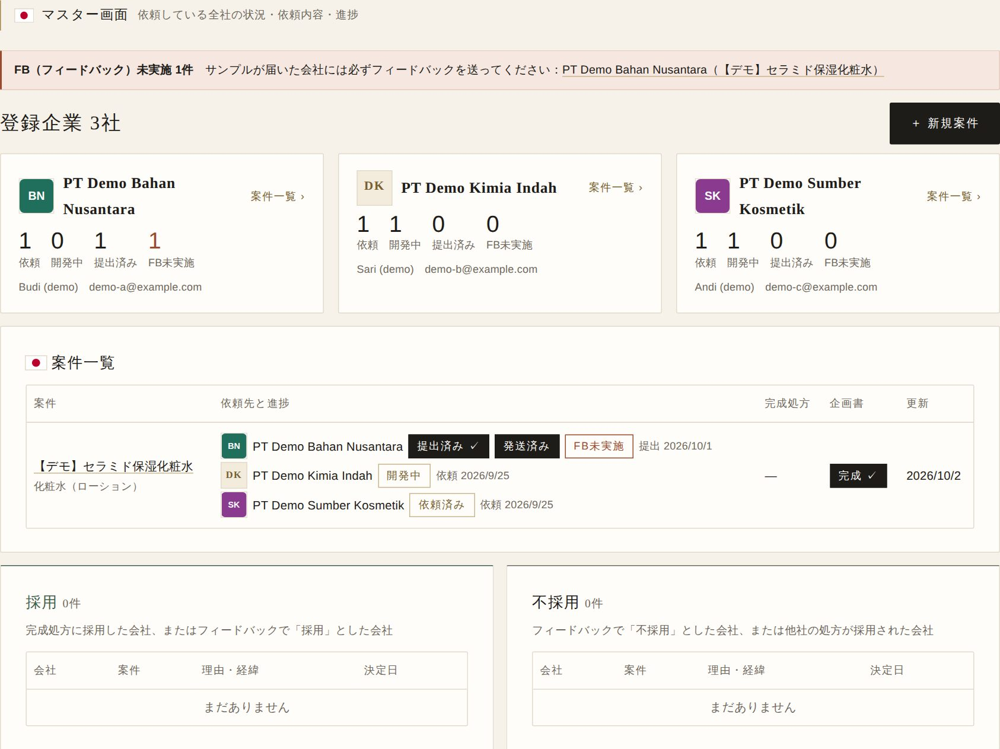
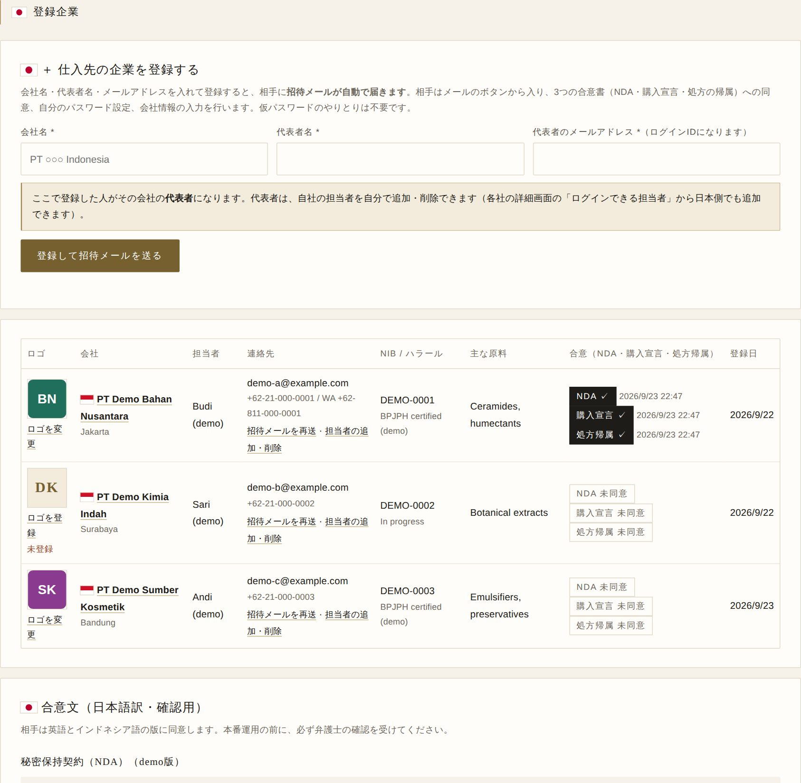
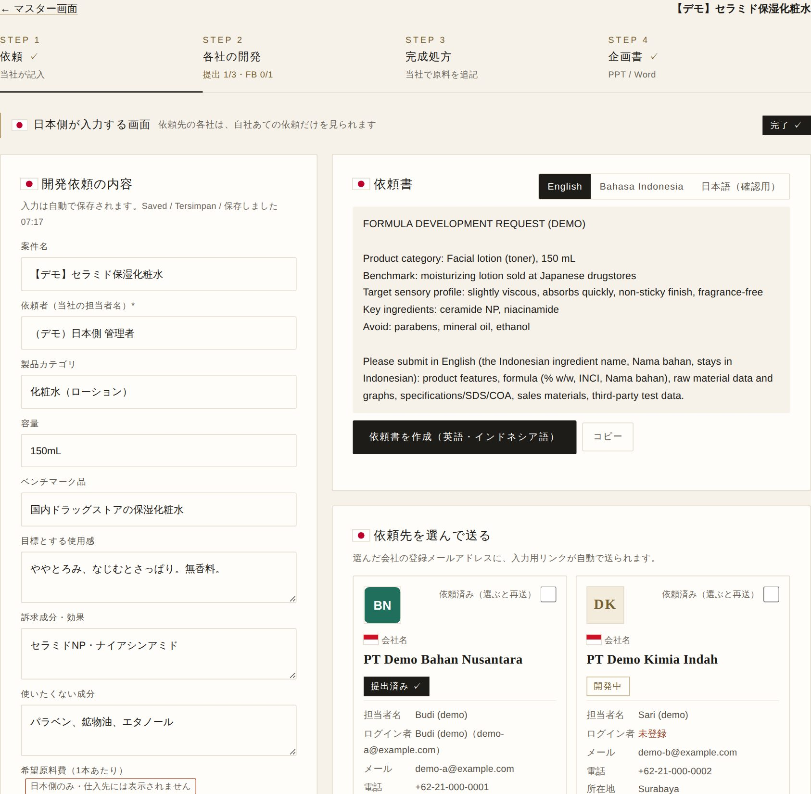
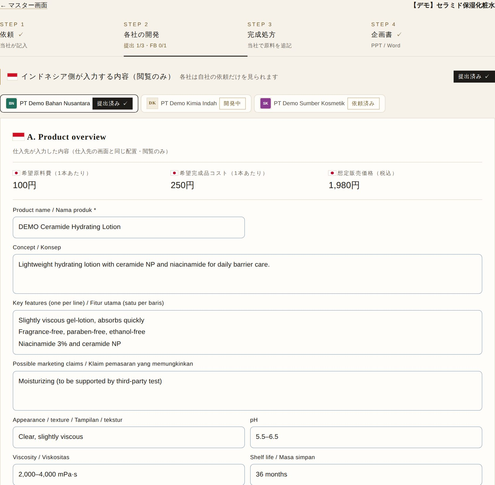
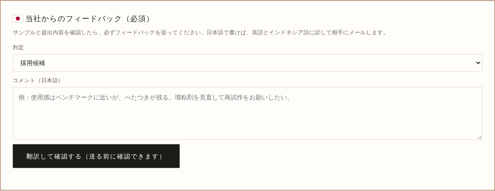
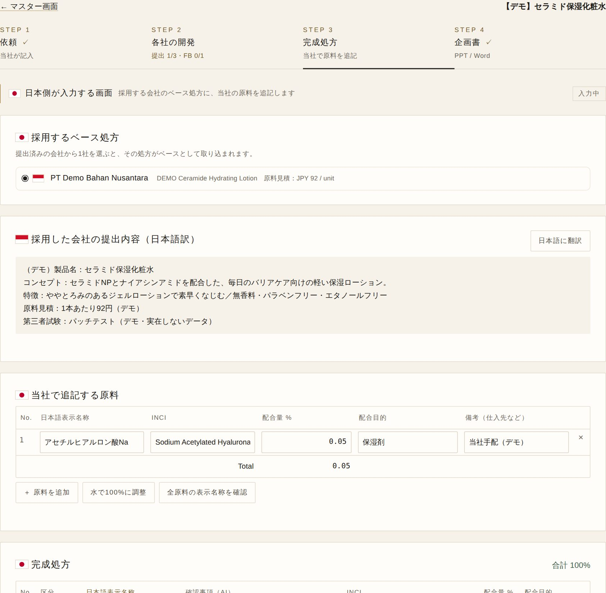
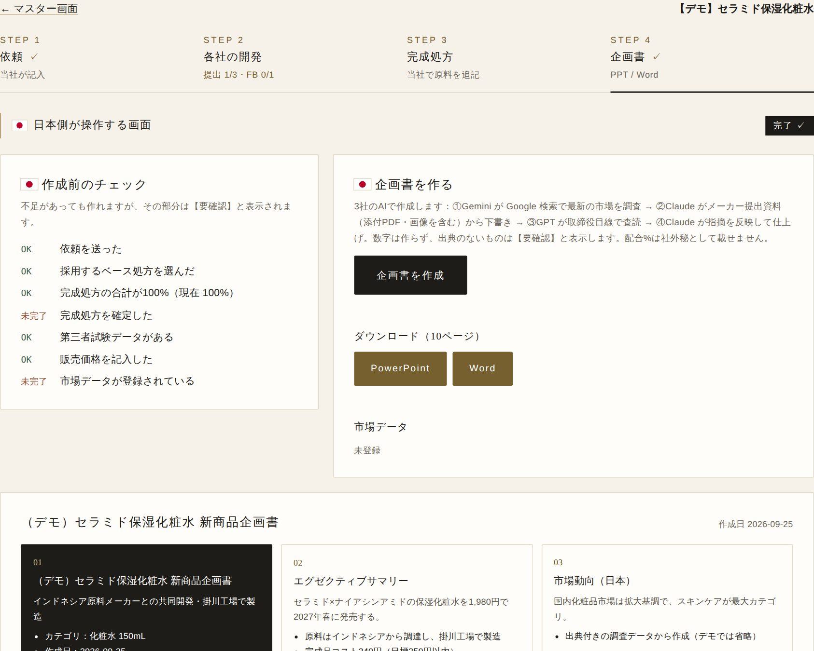

仕入先の画面での操作は「仕入先向けガイド」に、インドネシア語・英語・日本語で並べて載せています。相手と電話やWhatsAppで話すときは、同じ番号の手順を見ながら案内できます。
01全体の流れ（日本側）

- マスター画面で、依頼している全社の状況（依頼・開発中・提出済み・フィードバック未実施）を一覧できます。
- 流れ：①仕入先を登録 → ②STEP 1 で依頼を作って送る → ③STEP 2 で各社の提出を確認しフィードバック → ④STEP 3 で完成処方 → ⑤STEP 4 で企画書。
- 画面上部の「FB（フィードバック）未実施」の帯には、提出またはサンプル発送があったのに、フィードバックをまだ送っていない会社が表示されます。必ず送ってください。
02① 仕入先の登録（日本側の作業は不要）

- 仕入先は、ログイン画面の「Register your company / 会社を登録する」から自分で登録します。登録されると開発用メールにお知らせが届きます（対応は不要）。登録しただけの会社は、日本から依頼を送るまで何も見られず、AI・ファイル添付も使えません。
- 日本側から代わりに登録したいときだけ、メニュー「登録企業」→「仕入先の企業を登録する（任意）」に、会社名・代表者名・メールアドレスを入れて「登録して招待メールを送る」を押します。
- 相手には英語・インドネシア語の招待メールが自動で届き、ボタンから入って合意・パスワード設定・会社情報の入力を行います。
- メール送信がまだ設定されていない間は、画面にログイン用リンクが表示されます。WhatsApp などで本人だけに送ってください（1回だけ・期限付きで有効）。
- 相手がパスワードを忘れたときは、相手自身がログイン画面の「Forgot password?」で新しいリンクを受け取れます。日本側からは一覧の「招待メールを再送」でも送れます。
- 担当者の追加・削除は、各社の詳細画面（マスター画面で会社をクリック）の「ログインできる担当者」から行えます。仕入先の代表者も自分で追加・削除できます。同じ会社の担当者は全員、その会社あての依頼をすべて見られます（他社の情報は見えません）。
- ログインは二段階です。パスワードの後に6桁の確認コードがメールで届き、入力するまで何も見られません（日本側も仕入先も同じ）。メールのリンクから入った場合はコード不要です。メール送信の設定が済むまでは、この確認は自動で省略されます。
- 希望原料費・完成品コスト・販売価格・試作希望日は「日本側のみ」の項目で、仕入先には表示されません（依頼書にも入りません）。
03② STEP 1：依頼を作って送る

- 「＋ 新規案件」で案件を作り、開発依頼の内容（コンセプト・目標原価・スケジュールなど）を日本語で入力します。
- 「依頼書を作成（英語・インドネシア語）」で依頼書を作り、「日本語（確認用）」で意味を確認します。
- 「依頼先を選んで送る」で会社を選び、「依頼先を確認する」→ 送信。相手には入力用リンクがメールで届きます。
04③ STEP 2：各社の提出を確認する

- 会社のタブを切り替えて、各社が入力した A〜F（製品概要・処方・原料の特長・試験・添付・発送）を見ます。
- 処方は「日本語表示名称に変換」で日本語名を付け、Excel・PDF でも保存できます。
- サンプルが届いたら、下のフィードバック欄に進みます。
05③ STEP 2：フィードバックを送る（必須）

- 判定（採用候補・再試作を依頼・不採用・採用（本処方は当社に帰属））を選び、コメントを日本語で書きます。
- 「翻訳して確認する」を押すと、英語とインドネシア語に訳され、別のAIが訳をチェックします。訳し戻しの日本語も確認できます。
- 内容を確認して送ると、相手にメールが届き、相手の画面にも表示されます。
06④ STEP 3：完成処方を作る

- 採用する会社を1社選ぶと、その処方がベースとして取り込まれます。当社で加える原料を追記し、「水で100%に調整」で合計を100%にします。
- 「全原料の表示名称を確認」で日本語表示名称を確認します。「要確認」は出典リンクを開いて目で確認し、「確認済みにする」を押します。
- 全成分表示は配合量の多い順に自動で作られます。すべてそろったら「完成処方を確定」を押します。
07⑤ STEP 4：企画書を作る

- 「企画書を作成」で、市場調査 → 下書き → 査読 → 仕上げ の4工程をAIが行います（3〜6分、AIの利用料がかかります）。
- できた企画書（10ページ）は PowerPoint と Word でダウンロードできます。【要確認】の箇所は人の目で確認してください。